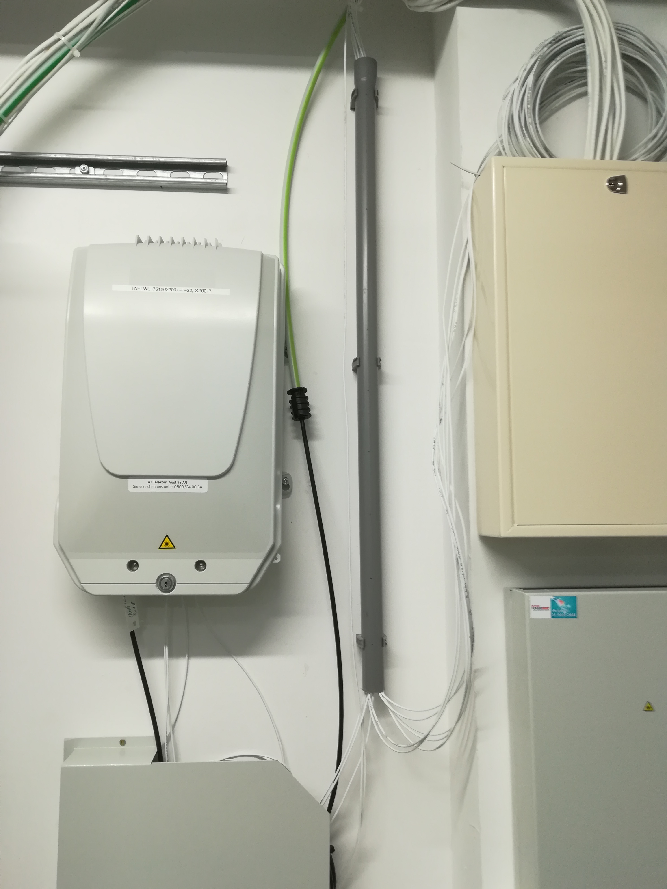

Jetzt muss ich mal ganz blöd fragen:
Bisher hatte ich mobiles Internet von t-mobile. In der neuen Wohnung ist aber der Empfang nicht gut und mir wurde seitens Magenta ein sofortiger Umstieg auf ein kabelgebundenes Internet angeboten.
Nun eigentlich erst die Blöde Frage:
Ich hab eine Telefonleerdose von der ein Kabel in den Technikraum geht. dieses ist aber nirgendwo angeschlossen.
daneben hängt eine größere Box von A1. ich vermute mal, dass da das kabel einfach mal angeschlossen wird wenn ich internet, telefon oder tv anmelde.
Kann ich mit diesem Kabel Magenta nutzen oder muss da alles neu gemacht werden?
da noch keine Antworten vorhanden sind die frage noch einmal kurz und präzise
kann magenta die infrastruktur von a1 für mein internet benutzen? und wer stellt die infrastruktur fertig (kabel zur wohnung ist am hausverteiler noch nicht angeschlossen) 
Hey @Michael K.
Wenn Magenta keine eigene Infrastruktur hat (Coax-Kabel-Netz) verwenden diese das DSL Netz von A1. Für die Installation würde auch ein A1-Techniker beauftragt werden. Nachdem das im Technikraum nach Glasfaser aussieht, schätze ich Mal es handelt sich um FTTB.
LG NTM
vor 8 Minuten schrieb NTM:Hey @Michael K.
Wenn Magenta keine eigene Infrastruktur hat (Coax-Kabel-Netz) verwenden diese das DSL Netz von A1. Für die Installation würde auch ein A1-Techniker beauftragt werden. Nachdem das im Technikraum nach Glasfaser aussieht, schätze ich Mal es handelt sich um FTTB.
LG NTM
na ja. nachdem der supportmitarbeiter was von gigabitleitung geredet hat würde ich vermuten die nehmen das glasfasernetz.
kabelfernsehen steht allerdings auch irgendwo an obwohl wir eine haussatanlage haben.
na ja. werd wohl wechseln. sieht aus als bräuchte man nur die dose und das andere ende des kabels anschließen
Es sieht so aus, als hättest du von A1 FTTB/FTTH und vermutlich von der Energie AG FTTH.
Die A1 Leitung kann man meistens auch über magenta bestellen, was in vielen fällen einen Vorteil bietet.
Könntest du bitte einmal nachsehen, ob da auch noch ein UPC/Magenta Kasten hängt?
Ich vermute einmal, du wohnst in ober Österreich. Da ist seitens magenta noch kein Gigabit Tarif möglich.
Bearbeitet von IT-Freakvor 43 Minuten schrieb IT-Freak:Es sieht so aus, als hättest du von A1 FTTB/FTTH und vermutlich von der Energie AG FTTH.
Die A1 Leitung kann man meistens auch über magenta bestellen, was in vielen fällen einen Vorteil bietet.
Könntest du bitte einmal nachsehen, ob da auch noch ein UPC/Magenta Kasten hängt?
Ich vermute einmal, du wohnst in ober Österreich. Da ist seitens magenta noch kein Gigabit Tarif möglich.
gerade mit einem machbarn geredet. der hat noch das upc internet. im unterverteiler der wohnung liegt anscheinend ein kabel von upc an.
na ja. die techniker werdens dann schon wissen. gibt ja augenscheinlich diverse möglichkeiten des anschlusses.
interessant ist, dass gestern der magentasupport gemeint hat dass bis zu 1000mb mögloch sind. dem nachbarn wurde bei einzug gesagt bis zu 300 seien möglich
Ich würde auf bis zu 500 tippen, wenn dein Nachbar UPC/Magenta über das TV Kabel hat.
{kind=link}
{kind=link}